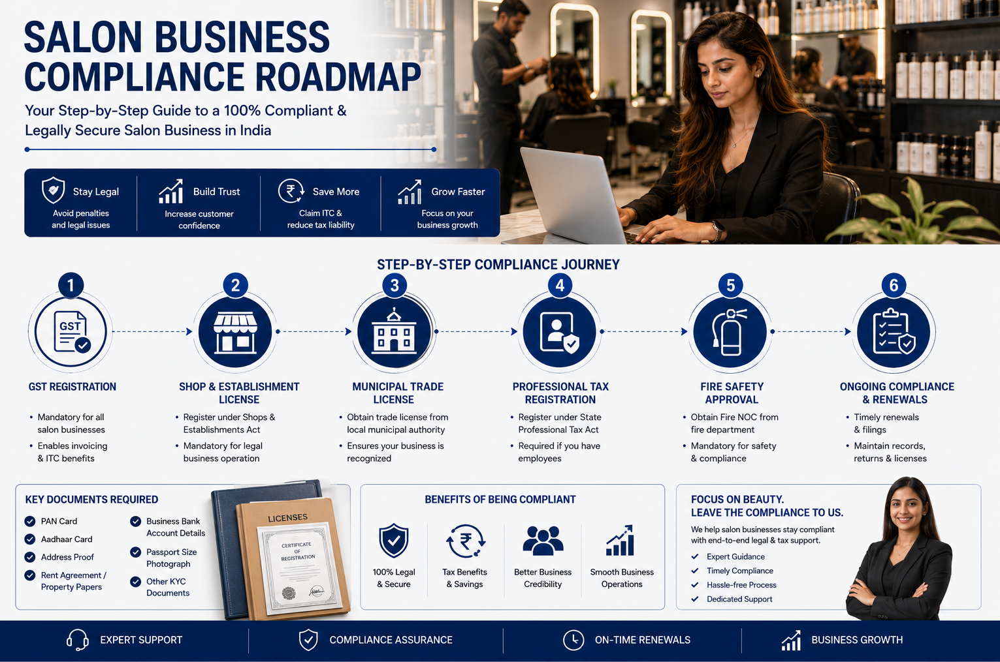

A salon is simple to operate, but easy to misclassify.
Haircuts, hair colouring, facials, waxing, manicure, pedicure, bridal makeup, nail treatments and similar services form the core revenue stream for most salons. Modern salons also earn from shampoos, conditioners, skincare products, styling products and beauty accessories.
This mix creates a unique compliance environment. Services and products should be classified separately, reported appropriately and backed by proper invoicing records. Most issues arise from weak record-keeping rather than complex tax planning.
Use SAC for salon services and HSN for retail products.
Salon services generally fall under the personal care and beauty treatment service classification. Products sold by the salon are goods, so they should be mapped separately using HSN codes.
| Supply type | Common code reference | GST treatment note |
|---|---|---|
| Beauty and physical well-being services | Group 99972 | Current service rate is generally 5% without ITC under the post-2025 rate framework. |
| Cosmetic treatment, manicuring and pedicuring | SAC 999722 | Use service description clearly on invoices, especially for bundled packages. |
| Other beauty treatment services not elsewhere classified | SAC 999729 | Useful where the service does not fit a more specific beauty service description. |
| Shampoo, conditioner and hair-care products sold separately | Chapter 33 HSN family | Classify as goods. Do not automatically apply the salon service rate. |
| Cosmetics, skincare and makeup products sold separately | Chapter 33 HSN family | Map product-wise based on ingredients, use and packaging. |
Growing salons should monitor registration before crossing the line.
GST registration becomes mandatory once applicable registration requirements are triggered. Salon owners should also review interstate supplies, online booking platforms, corporate service contracts, multi-location operations and special registration provisions.
Track total revenue
Include services, product sales, memberships, packages and bridal bookings in regular monitoring.
Corporate work changes expectations
Business clients often need GST-compliant invoices and clean vendor onboarding documents.
Multi-branch salons need tighter controls
Branch-wise billing, stock transfer and employee records should be reconciled consistently.
Composition may simplify compliance, but it can limit invoicing and ITC.
Eligible small service providers may opt for a simplified composition-style route subject to turnover limits and conditions. It can suit small local salons with limited compliance resources, but not every salon should choose it.
Why some local salons consider it.
- Simplified compliance and lower return filing burden.
- Lower record-keeping requirements compared with full regular compliance.
- Fixed-rate tax payment on turnover, subject to eligibility.
Why growing salons often avoid it.
- Interstate supplies may be restricted.
- Input Tax Credit cannot be claimed.
- GST cannot be collected separately from customers.
- Regular tax invoices cannot be issued.
- Eligibility conditions must be continuously satisfied.
GST is only one part of salon compliance.
Salon owners should verify state and local requirements before starting operations. Requirements vary by city, premises size, employees, signage, fire rules and the type of services provided.

| Registration / licence | When it matters |
|---|---|
| Shop and Establishment registration | Required in most states for commercial establishments employing staff. |
| Municipal trade licence | Often required by local authorities before commencing business operations. |
| GST registration | Required when GST registration triggers apply. |
| Fire safety approval | May be required depending on premises size, building rules and local fire regulations. |
| Professional tax registration | Applicable in states where professional tax law applies to employers or professionals. |
| Signage and advertisement permission | Some municipal bodies require approval for external signboards and display advertising. |
ITC needs extra care after the 5% service-rate change.
Beauty and physical well-being services are now generally taxed at 5% without ITC. This means salons should not assume credits on rent, equipment, tools or consumables can be used against service output tax. Mixed service and retail businesses need a careful product-wise and supply-wise review.
| Expense / purchase | Practical control |
|---|---|
| Beauty products consumed during services | Do not claim ITC against 5% no-ITC salon service output unless eligibility is clearly available. |
| Retail inventory purchased for resale | Evaluate separately from service consumables and reconcile product sales with purchase records. |
| Rent, equipment, chairs, dryers, steamers and software | Maintain invoices even where ITC is restricted; records still support costing and audits. |
| Renovation and construction expenses | Construction-related credits are restricted in many cases and need careful review before any claim. |
Salon notices usually come from mismatch, cash gaps or weak billing detail.
Regular reconciliation and record maintenance reduce audit exposure. Appointment software, daily cash summaries, product stock records and bank deposits should tell the same story as GST returns.
GSTR-1 and GSTR-3B mismatch
Reported outward supply should reconcile with books, POS records and invoices.
High cash collections
Daily appointment and collection records should support cash-heavy salon revenue.
Service and retail billing mixed together
Invoices should distinguish service SAC and product HSN wherever both are supplied.
Credit claims inconsistent with no-ITC output
Review credits carefully after the 5% without ITC salon-service rate change.
Turnover and deposits differ
Explain UPI, card, cash, membership, package and refund flows cleanly.
Employee records missing
Maintain salary, attendance, incentives and contractor records where staff are employed.
A salon invoice should split services and products clearly.
Every GST invoice should include GSTIN and trade name, customer details where required, SAC for services, HSN for products, description, taxable value, GST amount, total value, invoice date and a unique invoice number.
Common salon GST and compliance questions.
These answers are practical starting points. Verify final treatment against the exact service, product, state, registration status and current GST notification.
Is GST registration mandatory for every salon?
No. Registration becomes mandatory when GST law triggers registration through turnover or another special rule.
What GST rate applies to salon services now?
Beauty and physical well-being services are generally under the 5% without ITC framework after the September 2025 rate changes.
Can a salon claim ITC on beauty products used during treatments?
For 5% no-ITC salon services, ITC should generally not be claimed against that output. Mixed retail cases need separate review.
Can a salon sell beauty products along with services?
Yes. Product sales should be classified with HSN codes and shown separately from service charges wherever possible.
Can a salon use the Composition Scheme?
Eligible small service providers may use simplified composition provisions subject to turnover and conditions, but they cannot collect GST separately or claim ITC.
Can a salon claim ITC on renovation expenses?
Construction and renovation-related credits are restricted in many cases. Review the invoice, nature of work and GST provisions before claiming.
What records should a salon maintain?
Maintain invoices, appointment records, daily revenue summaries, purchase bills, employee records, bank statements, GST filings and accounting records.
What causes GST notices for salons?
Common triggers include return mismatches, high cash collections without records, incorrect classification, delayed filing and unsupported ITC claims.
Need help cleaning up salon billing and GST records?
Send your service menu, retail product list, billing sample, turnover estimate and registration status. TaxBro can help map the SAC, HSN, invoice and compliance checklist.